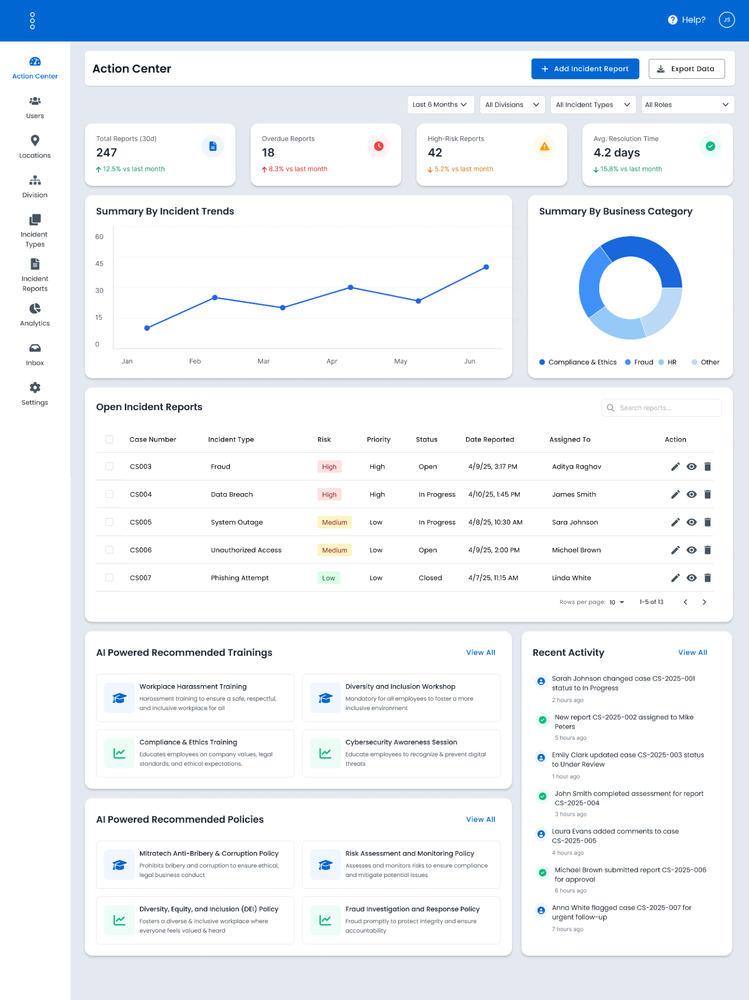
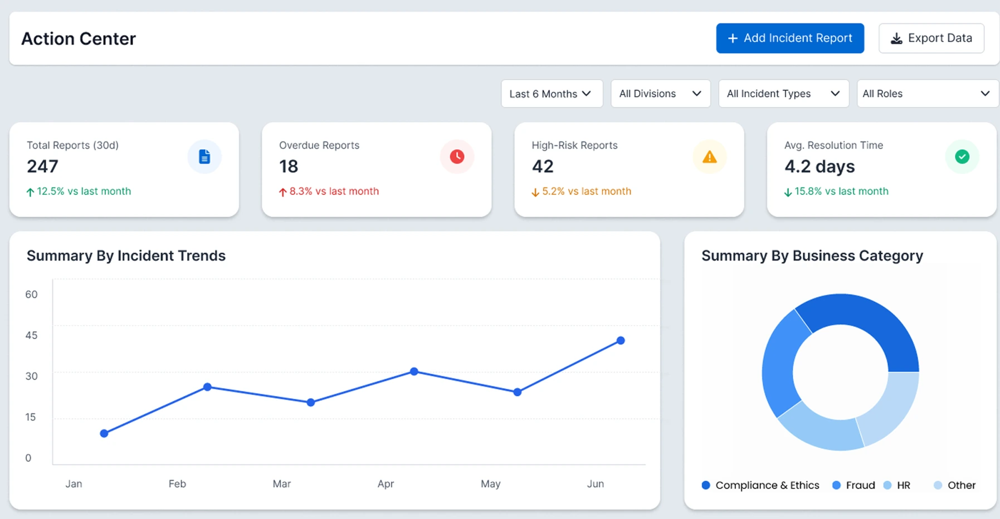
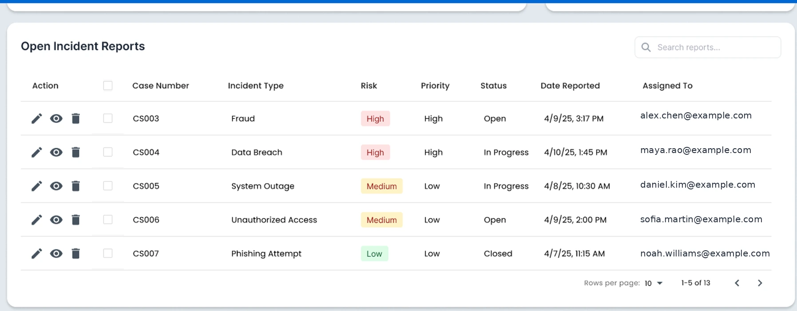
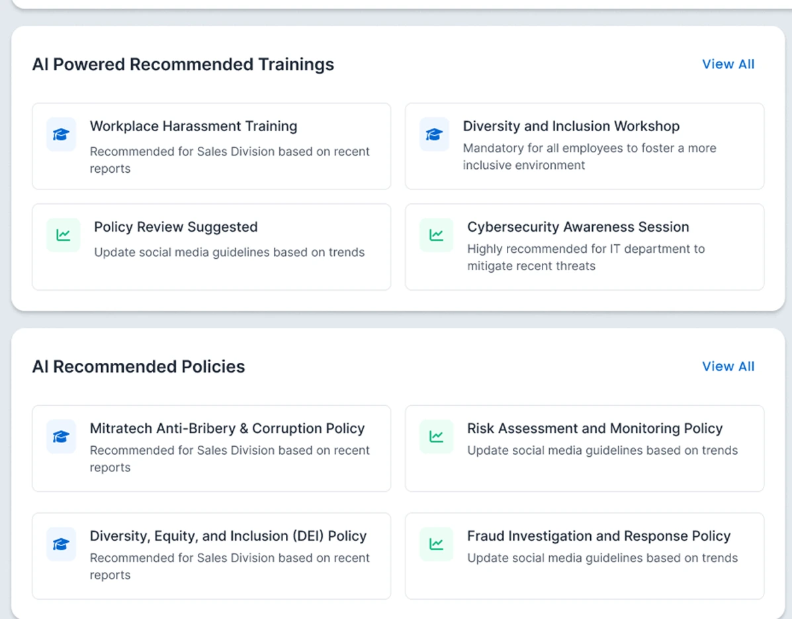
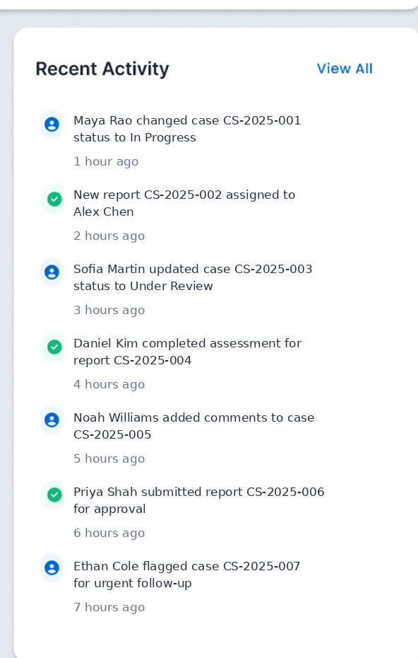

Fragmented workflows
Incident, training, and policy activities could require separate tools and manual handoffs.
Enterprise SaaS · Ethics & Compliance · AI-assisted
>A concept proposal that brought incident oversight, organisational trends, active case work, and human-reviewed training and policy guidance into one compliance workspace.
Only the Action Center dashboard is shown publicly. Detailed incident-management, training, policy, permissions, and administrative workflows remain internal and confidential.

Project at a glance
Product opportunity
Compliance teams could capture and investigate workplace incidents, but the broader work of prevention could remain split across case management, reporting, employee training, and policy-management processes.
A compliance manager who noticed a recurring concern might need to export incident information, analyse patterns outside the product, identify the affected audience, locate relevant training, contact the appropriate policy owner, and document why the intervention was initiated.
The Action Center concept explored a more connected journey from detection to prevention: one workspace for current incident operations, organisational signals, and relevant preventive guidance.
How might we help compliance managers move from reactive incident monitoring to timely, evidence-based preventive action while protecting sensitive report data and keeping every recommendation under human control?

Incident, training, and policy activities could require separate tools and manual handoffs.
Patterns could require exports and analysis outside the product before a response was coordinated.
A unified feedback loop could connect detected concerns with relevant training and policy action.
Working user model
These are responsibility-based role profiles developed for the concept. They are not presented as personas derived from completed interviews.
Reviews the backlog, identifies patterns, and coordinates authorised preventive action.
Finds assigned work, understands urgency and deadlines, and continues case follow-up.
Reviews approved learning content, confirms the audience, and coordinates assignment.
Reviews whether existing guidance should be clarified, updated, or communicated differently.
Reviews permitted trends, unresolved risk, action ownership, and programme response.
Primary job to be done
“When I review incident activity, I need to identify what requires immediate attention and whether broader patterns justify preventive action, so I can coordinate the right response without exporting sensitive data or switching between disconnected systems.”
Product model
The Action Center was most valuable when it connected what the system observed to the next authorised decision—not when it simply displayed more metrics.
Dashboard anatomy
Each crop below comes from the same original Action Center dashboard—not a separate product screen.
Summary cards provided a quick view of volume, overdue work, high-risk cases, and resolution time.
Filters and charts helped users examine changes by period, division, and incident category.
The incident queue linked summary information to case number, risk, priority, status, and owner.
Training, policy, and activity panels connected case signals to broader programme response.
Design decisions
Connected compliance
Incident management explained what had been reported, while training and policy management supported broader prevention. The concept connected both sides so users could move from awareness to the appropriate next decision.
Data semantics
The original screen combines a six-month filter, a 30-day report count, month-over-month changes, current overdue incidents, current high-risk incidents, and average resolution time.
Show exact date ranges, last-updated time, metric definitions, comparison basis, and direct drill-downs to the matching records.
Operational clarity
These fields answer different questions during triage. Combining them into one generic severity indicator would weaken accountability and make sorting less meaningful.
These definitions are the conceptual model used to critique the design; the original product rules and permission model were not recovered.

Human-reviewed guidance
The dashboard included AI-labelled training and policy suggestions, but it did not visibly explain their basis, source, time period, affected audience, or available user action.

Responsible product model
The original screen used an AI label, but the proposal did not progress far enough to establish a production AI architecture.
A credible first version would begin with transparent mappings between approved incident categories and approved learning or policy content. AI could then be evaluated as an extension for ranking, pattern summarisation, semantic retrieval, and plain-language explanation.
The choice to introduce AI should follow a demonstrated relevance problem—not the presence of an “AI-powered” heading.

Show why a suggestion appeared, the scope it relates to, and which approved source it uses.
Prefer aggregates, minimise data, protect reporter identity, and suppress signals that could expose individuals.
No training, policy, risk, or case decision should be executed automatically.
Cards, charts, search, recommendations, exports, and drill-downs must share one access boundary.
Record the signal, recommendation version, reviewer, decision, modification, owner, and resulting action.
Critical design review
Enterprise states
Preserve page structure, identify the areas still loading, and show last successful update.
Distinguish a healthy empty queue from no matching results or unavailable data.
Explain the available next step without revealing that a restricted record exists.
Isolate failed widgets, retain clearly labelled safe data where appropriate, and provide Retry.
Retrospective validation plan
Representative tasks
Correct record selected, urgent items missed, assistance required, and time to locate relevant work.
Correct period interpretation, risk versus priority understanding, and filter-scope comprehension.
Can explain why it appeared, identify the audience, recognise human responsibility, and choose a next action.
Keyboard completion, visible focus, table and chart comprehension, meaning beyond colour, and assistive-technology findings.
This validation plan was not executed during the original concept phase. Numeric targets would be set only after establishing a baseline with representative users.
Design outcome and boundaries
Public presentation boundary
The product image shown throughout this case study is the same original Action Center dashboard at different scroll positions and crops. Related internal workflows are intentionally discussed without showing confidential product screens or recreating them as if they were historical deliverables.
Reflection
A dashboard creates value when a user can understand the signal, open the underlying work, and take an authorised next step.
Current backlog, overdue work, historical submissions, and resolved-case measures should never be mixed silently.
The recommendation matters less than whether the user understands why it appeared and what responsibility remains with them.
Access, aggregation, anonymity, audit history, and accountability are core interaction requirements in ethics and compliance products.
Strongest next step